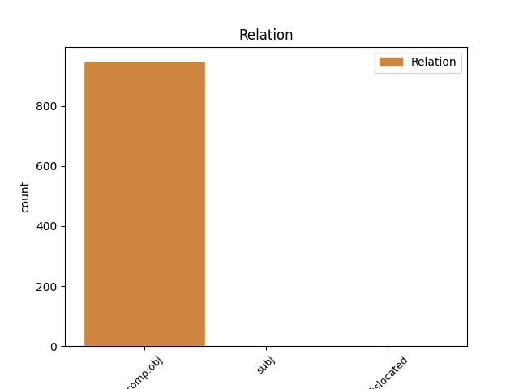
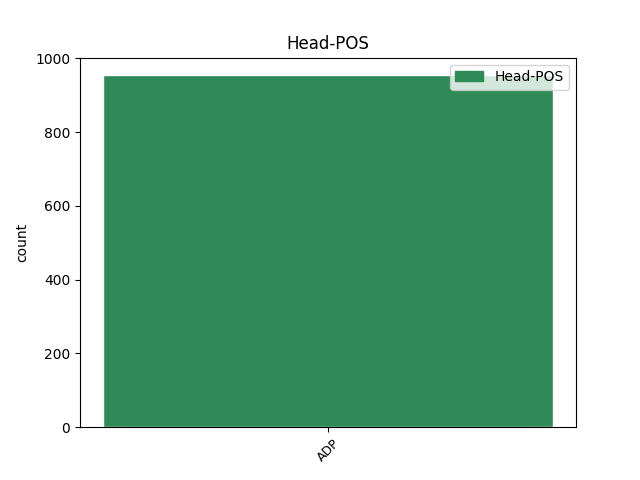
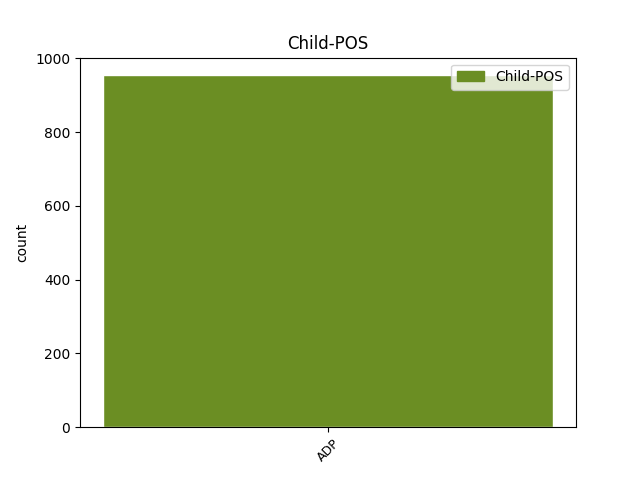

Distribution of features within this leaf



Agreement Rules sorted by frequency.
- When the dependent token is the direct object complements(comp:obj) of the head token, and the head token is ADP and the dependent token is PROPN.
1 उन्होंने _ _ _ _ 0 _ _ _
2 यहां _ _ _ _ 0 _ _ _
3 वेटिकन _ _ _ _ 0 _ _ _
4 दूतावास _ _ _ _ 0 _ _ _
5 में _ _ _ _ 0 _ _ _
6 एक _ _ _ _ 0 _ _ _
7 शोक _ _ _ _ 0 _ _ _
8 पुस्तिका _ _ _ _ 0 _ _ _
9 पर _ _ _ _ 0 _ _ _
10 हस्ताक्षर _ _ _ _ 0 _ _ _
11 कर _ _ _ _ 0 _ _ _
12 पोप _ _ _ _ 0 _ _ _
13 जॉन _ _ _ _ 0 _ _ _
14 पॉल _ _ _ _ 0 _ _ _
15 द्वितीय द्वितीय PROPN NNP Case=Acc|Gender=Masc|Number=Sing|Person=3 16 comp:obj _ ChunkId=NP6|ChunkType=head|Tam=0|Translit=dvitīya|Vib=0_का
16 के का ADP PSP AdpType=Post|Case=Acc|Gender=Masc|Number=Sing 0 _ _ _
17 निधन _ _ _ _ 0 _ _ _
18 पर _ _ _ _ 0 _ _ _
19 गहरा _ _ _ _ 0 _ _ _
20 दुख _ _ _ _ 0 _ _ _
21 प्रकट _ _ _ _ 0 _ _ _
22 किया _ _ _ _ 0 _ _ _
23 । _ _ _ _ 0 _ _ _
1 यह यह PRON PRP Case=Nom|Number=Sing|Person=3|PronType=Prs 0 _ _ _
2 है _ _ _ _ 0 _ _ _
3 पाकिस्तान _ _ _ _ 0 _ _ _
4 मूल _ _ _ _ 0 _ _ _
5 का _ _ _ _ 0 _ _ _
6 नासर _ _ _ _ 0 _ _ _
7 अहमद अहमद PROPN NNP Case=Nom|Gender=Masc|Number=Sing|Person=3 1 mod _ ChunkId=NP3|ChunkType=head|SpaceAfter=No|Tam=0|Translit=ahamada|Vib=0
8 , _ _ _ _ 0 _ _ _
9 जो _ _ _ _ 0 _ _ _
10 १५.१ _ _ _ _ 0 _ _ _
11 करोड़ _ _ _ _ 0 _ _ _
12 पौंड _ _ _ _ 0 _ _ _
13 की _ _ _ _ 0 _ _ _
14 संपत्ति _ _ _ _ 0 _ _ _
15 के _ _ _ _ 0 _ _ _
16 साथ _ _ _ _ 0 _ _ _
17 इस _ _ _ _ 0 _ _ _
18 सूची _ _ _ _ 0 _ _ _
19 में _ _ _ _ 0 _ _ _
20 ३७६वें _ _ _ _ 0 _ _ _
21 स्थान _ _ _ _ 0 _ _ _
22 पर _ _ _ _ 0 _ _ _
23 है _ _ _ _ 0 _ _ _
24 । _ _ _ _ 0 _ _ _
1 विदेश _ _ _ _ 0 _ _ _
2 मंत्री _ _ _ _ 0 _ _ _
3 के. _ _ _ _ 0 _ _ _
4 नटवर _ _ _ _ 0 _ _ _
5 सिंह सिंह PROPN NNP Case=Nom|Gender=Masc|Number=Sing|Person=3 8 subj _ ChunkId=NP|ChunkType=head|Tam=0|Translit=siṁha|Vib=0
6 वाशिंगटन _ _ _ _ 0 _ _ _
7 जाने _ _ _ _ 0 _ _ _
8 वाले वाला AUX VAUX Case=Nom|Gender=Masc|Number=Sing|Person=3|Polite=Form 0 _ _ _
9 हैं _ _ _ _ 0 _ _ _
10 और _ _ _ _ 0 _ _ _
11 अमरीकी _ _ _ _ 0 _ _ _
12 पेसिफिक _ _ _ _ 0 _ _ _
13 कमान _ _ _ _ 0 _ _ _
14 एडमिरल _ _ _ _ 0 _ _ _
15 विलियम _ _ _ _ 0 _ _ _
16 जे. _ _ _ _ 0 _ _ _
17 फालोन _ _ _ _ 0 _ _ _
18 भी _ _ _ _ 0 _ _ _
19 भारत _ _ _ _ 0 _ _ _
20 आने _ _ _ _ 0 _ _ _
21 वाले _ _ _ _ 0 _ _ _
22 हैं _ _ _ _ 0 _ _ _
23 । _ _ _ _ 0 _ _ _
1 इसके _ _ _ _ 0 _ _ _
2 साथ _ _ _ _ 0 _ _ _
3 ही _ _ _ _ 0 _ _ _
4 पुलिस _ _ _ _ 0 _ _ _
5 माओवादियों _ _ _ _ 0 _ _ _
6 की _ _ _ _ 0 _ _ _
7 ओर _ _ _ _ 0 _ _ _
8 से _ _ _ _ 0 _ _ _
9 संभावित _ _ _ _ 0 _ _ _
10 गड़बड़ियों _ _ _ _ 0 _ _ _
11 और _ _ _ _ 0 _ _ _
12 अनुसूचित _ _ _ _ 0 _ _ _
13 जाति _ _ _ _ 0 _ _ _
14 के _ _ _ _ 0 _ _ _
15 वर्गीकरण _ _ _ _ 0 _ _ _
16 को _ _ _ _ 0 _ _ _
17 लेकर _ _ _ _ 0 _ _ _
18 मादिगा _ _ _ _ 0 _ _ _
19 रिजर्वेशन _ _ _ _ 0 _ _ _
20 पोरटा _ _ _ _ 0 _ _ _
21 समिति समिति PROPN NNP Case=Acc|Gender=Fem|Number=Sing|Person=3 32 udep _ ChunkId=NP7|ChunkType=head|Tam=0|Translit=samiti|Vib=0
22 ( _ _ _ _ 0 _ _ _
23 एमआरपीएस _ _ _ _ 0 _ _ _
24 ) _ _ _ _ 0 _ _ _
25 और _ _ _ _ 0 _ _ _
26 माला _ _ _ _ 0 _ _ _
27 महानाडु _ _ _ _ 0 _ _ _
28 की _ _ _ _ 0 _ _ _
29 ओर _ _ _ _ 0 _ _ _
30 से _ _ _ _ 0 _ _ _
31 किए _ _ _ _ 0 _ _ _
32 जाने जा AUX VAUX Case=Acc|VerbForm=Inf 0 _ _ _
33 वाले _ _ _ _ 0 _ _ _
34 आंदोलन _ _ _ _ 0 _ _ _
35 की _ _ _ _ 0 _ _ _
36 योजना _ _ _ _ 0 _ _ _
37 के _ _ _ _ 0 _ _ _
38 बारे _ _ _ _ 0 _ _ _
39 में _ _ _ _ 0 _ _ _
40 खुफिया _ _ _ _ 0 _ _ _
41 जानकारी _ _ _ _ 0 _ _ _
42 को _ _ _ _ 0 _ _ _
43 भी _ _ _ _ 0 _ _ _
44 गंभीरता _ _ _ _ 0 _ _ _
45 से _ _ _ _ 0 _ _ _
46 ले _ _ _ _ 0 _ _ _
47 रही _ _ _ _ 0 _ _ _
48 है _ _ _ _ 0 _ _ _
49 । _ _ _ _ 0 _ _ _
1 अग्नि _ _ _ _ 0 _ _ _
2 मध्यम _ _ _ _ 0 _ _ _
3 दूरी _ _ _ _ 0 _ _ _
4 तक _ _ _ _ 0 _ _ _
5 मार _ _ _ _ 0 _ _ _
6 करने _ _ _ _ 0 _ _ _
7 वाली वाला ADP PSP AdpType=Post|Case=Nom|Gender=Fem|Number=Sing 0 _ _ _
8 ( _ _ _ _ 0 _ _ _
9 इंटरमीडियट _ _ _ _ 0 _ _ _
10 रेंज _ _ _ _ 0 _ _ _
11 बैलिस्टिक _ _ _ _ 0 _ _ _
12 मिसाइल _ _ _ _ 0 _ _ _
13 - _ _ _ _ 0 _ _ _
14 आईआरबीएम आईआरबीएम PROPN NNP Case=Nom|Gender=Fem|Number=Sing|Person=3 7 udep _ ChunkId=NP4|ChunkType=head|SpaceAfter=No|Tam=0|Translit=āīārabīema|Vib=0
15 ) _ _ _ _ 0 _ _ _
16 मिसाइल _ _ _ _ 0 _ _ _
17 है _ _ _ _ 0 _ _ _
18 जिसमें _ _ _ _ 0 _ _ _
19 दो _ _ _ _ 0 _ _ _
20 चरण _ _ _ _ 0 _ _ _
21 वाले _ _ _ _ 0 _ _ _
22 ठोस _ _ _ _ 0 _ _ _
23 ईधन _ _ _ _ 0 _ _ _
24 और _ _ _ _ 0 _ _ _
25 पोस्ट _ _ _ _ 0 _ _ _
26 बूस्ट _ _ _ _ 0 _ _ _
27 व्हैक्ल _ _ _ _ 0 _ _ _
28 ( _ _ _ _ 0 _ _ _
29 पीबीवी _ _ _ _ 0 _ _ _
30 ) _ _ _ _ 0 _ _ _
31 लगे _ _ _ _ 0 _ _ _
32 हैं _ _ _ _ 0 _ _ _
33 । _ _ _ _ 0 _ _ _
1 ' _ _ _ _ 0 _ _ _
2 राम _ _ _ _ 0 _ _ _
3 - _ _ _ _ 0 _ _ _
4 रोटी _ _ _ _ 0 _ _ _
5 पदयात्रा _ _ _ _ 0 _ _ _
6 ' _ _ _ _ 0 _ _ _
7 के _ _ _ _ 0 _ _ _
8 बाद _ _ _ _ 0 _ _ _
9 नई _ _ _ _ 0 _ _ _
10 पार्टी _ _ _ _ 0 _ _ _
11 बनाने _ _ _ _ 0 _ _ _
12 की _ _ _ _ 0 _ _ _
13 बात _ _ _ _ 0 _ _ _
14 से _ _ _ _ 0 _ _ _
15 इनकार _ _ _ _ 0 _ _ _
16 करते _ _ _ _ 0 _ _ _
17 हुए _ _ _ _ 0 _ _ _
18 उमा _ _ _ _ 0 _ _ _
19 ने _ _ _ _ 0 _ _ _
20 कहा _ _ _ _ 0 _ _ _
21 कि _ _ _ _ 0 _ _ _
22 यह _ _ _ _ 0 _ _ _
23 गैर _ _ _ _ 0 _ _ _
24 - _ _ _ _ 0 _ _ _
25 राजनीतिक _ _ _ _ 0 _ _ _
26 पदयात्रा _ _ _ _ 0 _ _ _
27 है _ _ _ _ 0 _ _ _
28 , _ _ _ _ 0 _ _ _
29 जिसे _ _ _ _ 0 _ _ _
30 वे वह PRON PRP Case=Nom|Number=Sing|Person=3|Polite=Form|PronType=Prs 0 _ _ _
31 और _ _ _ _ 0 _ _ _
32 पार्टी _ _ _ _ 0 _ _ _
33 महासचिव _ _ _ _ 0 _ _ _
34 अरुण _ _ _ _ 0 _ _ _
35 जेटली जेटली PROPN NNP Case=Nom|Number=Sing|Person=3 30 conj _ ChunkId=NP11|ChunkType=head|Tam=0|Translit=jeṭalī|Vib=0
36 आंध्र _ _ _ _ 0 _ _ _
37 प्रदेश _ _ _ _ 0 _ _ _
38 के _ _ _ _ 0 _ _ _
39 करीमनगर _ _ _ _ 0 _ _ _
40 से _ _ _ _ 0 _ _ _
41 शुरू _ _ _ _ 0 _ _ _
42 करने _ _ _ _ 0 _ _ _
43 वाले _ _ _ _ 0 _ _ _
44 थे _ _ _ _ 0 _ _ _
45 । _ _ _ _ 0 _ _ _
1 मथेरानी _ _ _ _ 0 _ _ _
2 ने _ _ _ _ 0 _ _ _
3 पत्रिका _ _ _ _ 0 _ _ _
4 से _ _ _ _ 0 _ _ _
5 बातचीत _ _ _ _ 0 _ _ _
6 के _ _ _ _ 0 _ _ _
7 क्रम _ _ _ _ 0 _ _ _
8 में _ _ _ _ 0 _ _ _
9 कहा _ _ _ _ 0 _ _ _
10 था _ _ _ _ 0 _ _ _
11 कि _ _ _ _ 0 _ _ _
12 इराक _ _ _ _ 0 _ _ _
13 में _ _ _ _ 0 _ _ _
14 संयुक्त _ _ _ _ 0 _ _ _
15 राष्ट्र _ _ _ _ 0 _ _ _
16 द्वारा _ _ _ _ 0 _ _ _
17 चलाए _ _ _ _ 0 _ _ _
18 जाने _ _ _ _ 0 _ _ _
19 वाले _ _ _ _ 0 _ _ _
20 तेल _ _ _ _ 0 _ _ _
21 के _ _ _ _ 0 _ _ _
22 बदले _ _ _ _ 0 _ _ _
23 अनाज _ _ _ _ 0 _ _ _
24 कार्यक्रम _ _ _ _ 0 _ _ _
25 के _ _ _ _ 0 _ _ _
26 सिलसिले _ _ _ _ 0 _ _ _
27 में _ _ _ _ 0 _ _ _
28 भारत _ _ _ _ 0 _ _ _
29 से _ _ _ _ 0 _ _ _
30 गए _ _ _ _ 0 _ _ _
31 प्रतिनिधिमंडल _ _ _ _ 0 _ _ _
32 में _ _ _ _ 0 _ _ _
33 अपने _ _ _ _ 0 _ _ _
34 बेटे _ _ _ _ 0 _ _ _
35 जगतसिंह _ _ _ _ 0 _ _ _
36 और _ _ _ _ 0 _ _ _
37 उसके _ _ _ _ 0 _ _ _
38 मित्र _ _ _ _ 0 _ _ _
39 अंदलीब _ _ _ _ 0 _ _ _
40 सहगल _ _ _ _ 0 _ _ _
41 के _ _ _ _ 0 _ _ _
42 साथ साथ ADP NST AdpType=Post|Case=Nom|Gender=Masc|Number=Sing|Person=3 0 _ _ _
43 नटवर _ _ _ _ 0 _ _ _
44 सिंह सिंह PROPN NNP Case=Nom|Gender=Masc|Number=Sing|Person=3 42 conj _ ChunkId=NP17|ChunkType=head|Tam=0|Translit=siṁha|Vib=0
45 भी _ _ _ _ 0 _ _ _
46 शामिल _ _ _ _ 0 _ _ _
47 थे _ _ _ _ 0 _ _ _
48 । _ _ _ _ 0 _ _ _
Disagree Examples:
1 यह _ _ _ _ 0 _ _ _
2 भारत भारत PROPN NNP Case=Acc|Gender=Masc|Number=Sing|Person=3 3 comp:obj _ ChunkId=NP2|ChunkType=head|Tam=0|Translit=bhārata|Vib=0_का
3 की का ADP PSP AdpType=Post|Case=Nom|Gender=Fem|Number=Sing 0 _ _ _
4 अनूठी _ _ _ _ 0 _ _ _
5 राष्ट्रीय _ _ _ _ 0 _ _ _
6 संस्था _ _ _ _ 0 _ _ _
7 है _ _ _ _ 0 _ _ _
8 । _ _ _ _ 0 _ _ _
1 ठहरने _ _ _ _ 0 _ _ _
2 के _ _ _ _ 0 _ _ _
3 लिए _ _ _ _ 0 _ _ _
4 - _ _ _ _ 0 _ _ _
5 मध्यप्रदेश _ _ _ _ 0 _ _ _
6 पर्यटन _ _ _ _ 0 _ _ _
7 विकास _ _ _ _ 0 _ _ _
8 निगम निगम PROPN NNP Case=Acc|Gender=Masc|Number=Sing|Person=3 9 comp:obj _ ChunkId=NP|ChunkType=head|Tam=0|Translit=nigama|Vib=0_का
9 के का ADP PSP AdpType=Post|Case=Nom|Gender=Masc|Number=Plur 0 _ _ _
10 होटल _ _ _ _ 0 _ _ _
11 तथा _ _ _ _ 0 _ _ _
12 निजी _ _ _ _ 0 _ _ _
13 होटल _ _ _ _ 0 _ _ _
14 हैं _ _ _ _ 0 _ _ _
15 । _ _ _ _ 0 _ _ _
1 ओरछा ओरछा PROPN NNP Case=Acc|Gender=Masc|Number=Sing|Person=3 2 comp:obj _ ChunkId=NP|ChunkType=head|Tam=0|Translit=orachā|Vib=0_का
2 का का ADP PSP AdpType=Post|Case=Nom|Gender=Masc|Number=Sing 0 _ _ _
3 वैभव _ _ _ _ 0 _ _ _
4 पत्थरों _ _ _ _ 0 _ _ _
5 में _ _ _ _ 0 _ _ _
6 जैसे _ _ _ _ 0 _ _ _
7 कैद _ _ _ _ 0 _ _ _
8 हो _ _ _ _ 0 _ _ _
9 गया _ _ _ _ 0 _ _ _
10 है _ _ _ _ 0 _ _ _
11 , _ _ _ _ 0 _ _ _
12 समय _ _ _ _ 0 _ _ _
13 यहाँ _ _ _ _ 0 _ _ _
14 ठहरा _ _ _ _ 0 _ _ _
15 हुआ _ _ _ _ 0 _ _ _
16 लगता _ _ _ _ 0 _ _ _
17 है _ _ _ _ 0 _ _ _
18 और _ _ _ _ 0 _ _ _
19 हम _ _ _ _ 0 _ _ _
20 चले _ _ _ _ 0 _ _ _
21 जाते _ _ _ _ 0 _ _ _
22 हैं _ _ _ _ 0 _ _ _
23 बरसों _ _ _ _ 0 _ _ _
24 बरस _ _ _ _ 0 _ _ _
25 पीछे _ _ _ _ 0 _ _ _
26 , _ _ _ _ 0 _ _ _
27 मध्यकाल _ _ _ _ 0 _ _ _
28 के _ _ _ _ 0 _ _ _
29 एक _ _ _ _ 0 _ _ _
30 शहर _ _ _ _ 0 _ _ _
31 में _ _ _ _ 0 _ _ _
32 . _ _ _ _ 0 _ _ _
1 जिनमें _ _ _ _ 0 _ _ _
2 राजा _ _ _ _ 0 _ _ _
3 बीर _ _ _ _ 0 _ _ _
4 सिंह _ _ _ _ 0 _ _ _
5 जूदेव जूदेव PROPN NNP Case=Acc|Gender=Masc|Number=Sing|Person=3 6 comp:obj _ ChunkId=NP2|ChunkType=head|Tam=0|Translit=jūdeva|Vib=0_का
6 का का ADP PSP AdpType=Post|Case=Nom|Gender=Masc|Number=Sing 0 _ _ _
7 नाम _ _ _ _ 0 _ _ _
8 प्रमुख _ _ _ _ 0 _ _ _
9 है _ _ _ _ 0 _ _ _
10 । _ _ _ _ 0 _ _ _
1 यहाँ _ _ _ _ 0 _ _ _
2 से _ _ _ _ 0 _ _ _
3 पूरे _ _ _ _ 0 _ _ _
4 मांडू माण्डू PROPN NNP Case=Acc|Gender=Masc|Number=Sing|Person=3 5 comp:obj _ ChunkId=NP2|ChunkType=head|Tam=0|Translit=māṁḍū|Vib=0_का
5 का का ADP PSP AdpType=Post|Case=Nom|Gender=Masc|Number=Sing 0 _ _ _
6 विहंगम _ _ _ _ 0 _ _ _
7 दृश्य _ _ _ _ 0 _ _ _
8 देखा _ _ _ _ 0 _ _ _
9 जा _ _ _ _ 0 _ _ _
10 सकता _ _ _ _ 0 _ _ _
11 है _ _ _ _ 0 _ _ _
12 । _ _ _ _ 0 _ _ _